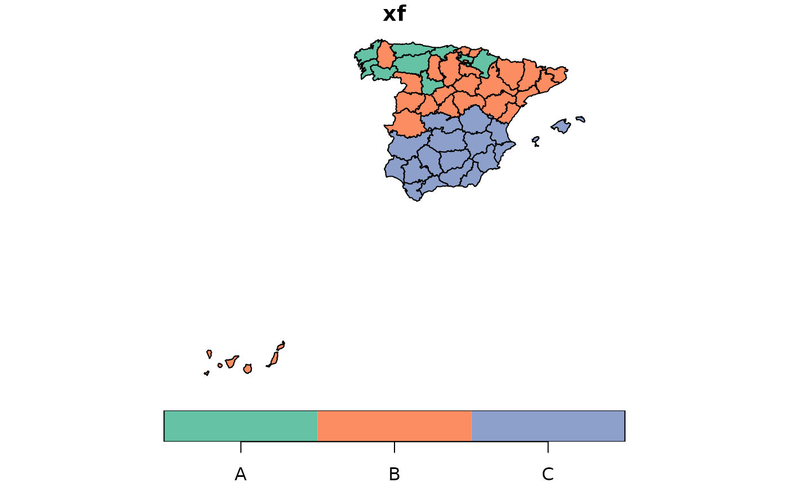

The purpose of the function dgp.spq is to generate a random dataset
with the dimensions and spatial structure decided by the user. This function may be
useful in pure simulation experiments or with the aim of showing specific properties
and characteristics of a spatial qualitative dataset.
Usage
dgp.spq(listw = listw, p = p, rho = rho, control = list())Arguments
- listw
A
listwobject of the class nb, knn, listw o matrix created for example bynb2listwfrom spatialreg package; ifnb2listwnot given, set to the same spatial weights as thelistwargument. It can also be a spatial weighting matrix of order (NxN) instead of alistwobject. Default =NULL.- p
a vector with the percentage of elements of each categories. The lengths must be the number of categories. The sum of the elements of vector must be 1.
- rho
the level of spatial dependence (values between -1 y 1)
- control
List of additional control arguments. See control argument section.
Value
a factor of length N (listw is a matrix of order (NxN)) with
levels the first capital letters: "A", "B", ....
The description of the DGP is available in Páez et al. 2010 (pag 291) and in details section.
Details
In order to obtain categorical random variables with controlled degrees
of spatial dependence, we have designed a two- stage data generating process:
Firstly, we simulate autocorrelated data using the following model:
$$Y = (I - \rho W)^{-1} \epsilon$$
where \(\epsilon = N(0,1)\) I is the \(N \times N\) identity matrix, \(\rho\) is a parameter
of spatial dependence, and W is a connectivity matrix that
determines the set of spatial relationships among points.
In the second step of the data generation process, the continuous spatially
autocorrelated variable Y is used to define a discrete spatial process
as follows. Let \(b_{ij}\) be defined by:
$$p(Y \leq b_{ij})= {i \over j} \ \ \ with \ \ \ i<j$$
Let \(A =\{a_1,a_2,...,a_k\}\) and define the discrete spatial process as:
$$X_s=a_1 \ \ \ if \ \ \ Y_s \leq b_{1k}$$
$$X_s=a_i \ \ \ if \ \ \ b_{i-1k} < Y_s \leq b_{ik}$$
$$X_s=a_k \ \ \ if \ \ \ Y_s > b_{k-1k}$$
References
Ruiz M, López FA, A Páez. (2010). Testing for spatial association of qualitative data using symbolic dynamics. Journal of Geographical Systems. 12 (3) 281-309
Author
| Fernando López | fernando.lopez@upct.es |
| Román Mínguez | roman.minguez@uclm.es |
| Antonio Páez | paezha@gmail.com |
| Manuel Ruiz | manuel.ruiz@upct.es |
Examples
#
N <- 100
cx <- runif(N)
cy <- runif(N)
coor <- cbind(cx,cy)
p <- c(1/6,3/6,2/6)
rho = 0.5
listw <- spdep::nb2listw(spdep::knn2nb(spdep::knearneigh(cbind(cx,cy), k = 4)))
xf <- dgp.spq(list = listw, p = p, rho = rho)
data(provinces_spain)
listw <- spdep::poly2nb(provinces_spain, queen = FALSE)
#> although coordinates are longitude/latitude, st_intersects assumes that they
#> are planar
#> Warning: some observations have no neighbours;
#> if this seems unexpected, try increasing the snap argument.
#> Warning: neighbour object has 4 sub-graphs;
#> if this sub-graph count seems unexpected, try increasing the snap argument.
p <- c(1/6,3/6,2/6)
rho = 0.9
xf <- dgp.spq(p = p, listw = listw, rho = rho)
provinces_spain$xf <- xf
plot(provinces_spain["xf"])
